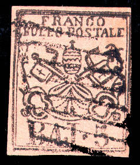
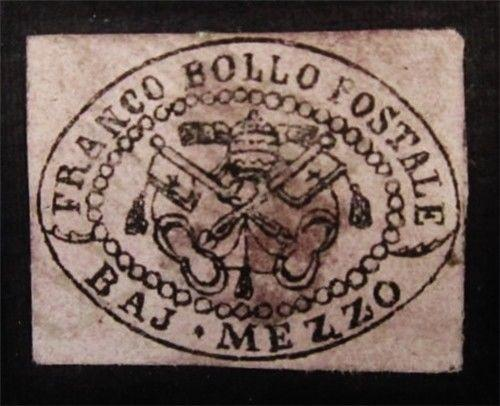
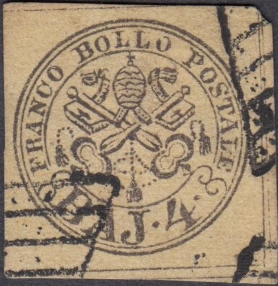
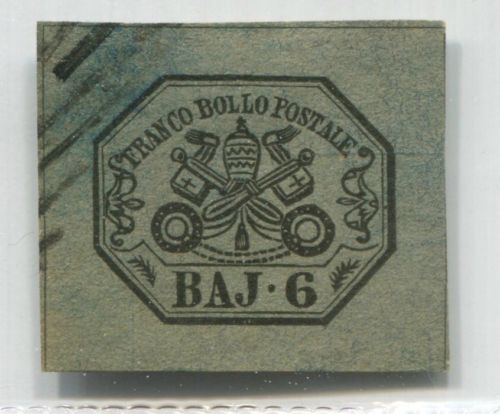
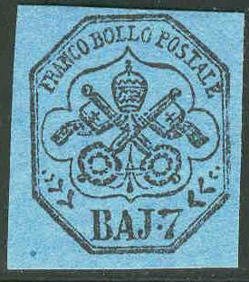
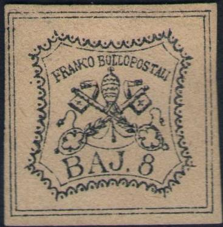
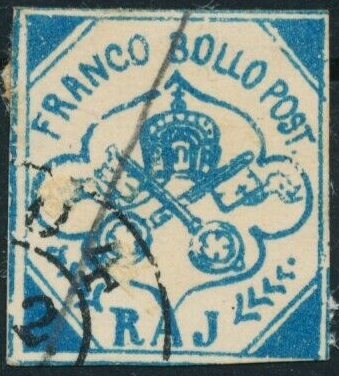

PAPAL STATES Forgeries of the 1851 issue
(except 50 b and 1 Sc values)
Stato Pontificio, Kirchenstaat, Etats
pontificaux
Return To Catalogue -
Papal States, 1851 issue - 1851 issue, 50 b and 1 Sc values - 1851 issue, forgeries of the 50 b value - 1851 issue, forgeries of the 1 Sc value - 1867 issue and miscellaneous - Italy
Note: on my website many of the
pictures can not be seen! They are of course present in the
catalogue;
contact me if you want to purchase the catalogue.
In 1855, the 1 b, 5 b and 8 b values were forged
in Bologna. The 5 b and 8 b even exist in two types. All postal
forgeries are quite rare.
There are two types of postal forgeries of the 5
Baj:

Postal forgery Type I (Bologna).

Rare postal forgery of the 5 b value. Type II: The lowest part of
the leaf ornament at the left hand side almost touches the
frameline in this forgery. The 'O' of 'POSTALE' is placed
slightly too far to the left (precisely under the 'N' of 'FRANCO'
instead of under the right side of the 'N').
Philatelic forgeries
Much more abundant than postal forgeries are
philatelic forgeries.
Examples:
The above rather blur forgery can be
distinguished by the fact that the white space in the 'A' of
'BAJ' is completely missing. Some parts of the central design
touch the central ellipse with the pearls. The genuine stamps
have double dividing lines, but in this forgery they are single.
In the book 'Roman States Forgeries the Issues of 1852' by F.J.
Levitsky three types of this forgery are described. The first has
the 'B' of 'BAJ' intact, the second has the top serif of this
word broken and the third has the 'F' and 'R' of 'FRANCO' joined
by a dash. It is not known who made this forgery, although Varro
Tyler attributes them to Zechmeyer.

The above forgery of the 1/2 b stamp has the 'C'
of 'FRANCO' very strange. The key handles are too large and don't
have pearls. Also note the weird shape of some of the other
letters such as the 'M' of 'MEZZO', etc. There are many other
differences when compared to a genuine stamp. The producer of
this forgery is unknown.
Forgery of the 1 Baj, many differences with the genuine stamps
can be found (ornaments, flowers, the '1' has no dented top,
etc.), reduced size. This is the first forgery of the 1 Baj stamp
mentioned in the book 'Roman States Forgeries' by F.J.Levitsky (6
forgeries are mentioned of this stamp).
There are several forgeries of the 2 Baj value
(sorry, no image available yet).
This forgery of the 2 Baj value is attributed to Senf in the book
Roman States Forgeries, the issue of 1867-1868' by F.J.Levitsky
and F.A.Jenkins. It has a ":" instead of a
"." behind "BAJ". The "B" and
"J" of this word are quite different from a genuine
stamp. It appears in the de Torres
catalogue of 1879 on page 86.
I've been told that this is a forgery of the 3 b, however no
mention of this forgery is made in 'Roman States Forgeries, the
issue of 1852' by F.J. Levitsky
This could be the 7th forgery of the 3 Baj. It is printed very
greasily.
Primitive forgery of the 3 Baj value.
Another forgery of the 3 Baj.

Forgery made by the forger Behrmann in 1874 (according to Roman
States Forgeries of F.J. Levitsky) with the lettering quite
different from the genuine stamp. I've also seen it with a
(grill) cancel.
Spiro forgery of the 4 Baj value, the '4' is different, the
letters are larger, etc. (reduced size)
Zechmeyer forgery. The keys are
touching the circle (left, right, top and bottom)
Another forgery of the 4 Baj, the "4" is almost closed
at the top.
This forgery of the 4 Baj value is described in the book Roman
States Forgeries, the issue of 1867-1868' by F.J.Levitsky and
F.A.Jenkins. It has no dot behind the "4", the
"F" is strange and the "S" of
"POSTALE" has large serifs and "POSTALE" is
written as "POSTATE". Sorry, no image available yet of
the 'real' forgery. It appears in the de
Torres catalogue of 1879 on page 86.
A very similar image appears in a preprinted old German stamp
album (but now with dot behind "4", but still with
inscription "POSTATE").
A Spiro forgery of the 5 Baj value (according to the book Roman
States Forgeries, the issue of 1867-1868' by F.J.Levitsky and
F.A.Jenkins). It has an extra dot behind the "5", the
"N" of "FRANCO" is touching the frame above
it.
This forgery of the 5 Baj value is described in the book Roman
States Forgeries, the issue of 1867-1868' by F.J.Levitsky and
F.A.Jenkins. It has a rather small "5", the
"S" of "POSTALE" is stange and the
"A" of "BAJ" larger. Sorry, no image
available yet of the 'real' forgery. It appears in the de Torres catalogue of 1879 on page 86.
Another 5 Baj forgery. The top of the "5" is different
from a genuine stamp.
Forgery of the 6 b with clumsy letters and the 'A' and 'J'
connected in 'BAJ'. The cancel appears to be printed at the same
time as the stamp, since I've seen another similar forgery with
the cancel in exactly the same position.
Forgery with different '6' placed too low, also a line on top of
the 'C' of 'FRANCO'
According to the book 'Roman States Forgeries, the issue of 1852'
by F.J. Levitsky, this forgery of the 6 b value was made by Spiro

Forgery (left) and image taken from a Moens catalogue: Les
Timbres Poste Illustrees of 1864 on plate 8.
This forgery of the 6 Baj value is described in the book Roman
States Forgeries, the issue of 1852' by F.J.Levitsky. Sorry, no
image available yet of the 'real' forgery. It appears in the de Torres catalogue of 1879 on page 86.
Rather badly done forgery of the 6 Baj. The left keyhandle is too
close to the border to the left of it. The forgery is overinked.
The "6" is too thick.
Forgery with the 'N' of 'FRANCO' touching the frameline above it.
The small pearls at the bottom of the round key-handles are
missing. The '.' between 'BAJ' and '7' is too low. This forgery
is also listed in Levitsky's book.
Primitive forgery made by Senf according to Levitsky's book.
However, a similar forgery appers on a advertisement card from
the stamp forger Oneglia.
This forgery of the 7 Baj value is described in the book Roman
States Forgeries, the issue of 1867-1868' by F.J.Levitsky and
F.A.Jenkins. It has only a line on the right upper key part
(instead of a cross), also the letters are different. The top
part of the "B" of "BAJ" is too large. Sorry,
no image available yet of the 'real' forgery. It appears in the de Torres catalogue of 1879 on page 86.
Forgery with the "V"-shaped ornament almost touching
the "7".
7 Baj forgery "7" different. Also the lettering is
different (and even placed at a slightly different position,
compare the "LLO" on top with a genuine stamp.
Fournier forgery

The above stamp is a forgery, it was offered by
Fournier. The above stamp has the top left of the "7"
damaged and there is a bulb at the right hand side of the
"A" of "BAJ". The "S" of
"POSTALE" does not have any serifs in this forgery. In
'The Fournier Album of Philatelic Forgeries' a block of similar
stamps can be found (even with tete-beche included), with the
same default on every stamp (see image below). I've seen this
forgery with a certificate of genuineness of the
'Briefmarkenprufstelle Basel'..... Next to it is a bogus 7 b blue
stamp (instead of black on blue) with the same distinguishing
characteristics as the Fournier forgery. This blue forgery is not
even mentioned in the Levitsky book on forgeries of the Papal
States.
(Whole sheet of Fournier forgeries, reduced size)
Tete-beche 7 baj Fournier forgeries
Page from a 'Fournier Album of Philatelic forgeries'. The 5 Baj
forgeries are printed on both sides (to imitate a rare misprint).
5 Baj, printed in front and back. This might be a Fournier
forgery (always with the paper too pinkish). In some copies (such
as the one here), the 'A' has a missing bottom left part. Others
have some breaks in the inner frameline in the upper left or
lower left corners.
The following forged cancels can be found in the
Fournier album "BORGO 6 FEBR 59" in a single circle,
"FOLIGNO 20 DIC 68" in a double circle (probably used
on the next issue) and the typical Papal States grid cancel.
Page of a 'Fournier Album of Philatelic Forgeries' with some
Fournier cancels, reduced sizes, 'BORGO 6 FEBR 59', mute cancel
and 'FOLIGNO 20 DIC 68' (I have seen the last Foligno cancel on
forgeries of the first issue of Italy)
Other cancels of Fournier that were used on
forged stamps of the Papal States and Romagna
are:
"* ROMA * 1 DEC 68" in two concentric circles
"ROMA 17 AUG 66" in two concentric circles
"ROMA 18 APR. 66" in two concentric circles
"VITERBO 6 DEC 67" in two concentric circles
"CIVITAVECCHIA 10 NOV 67" in two concentric circles
"BOLOGNA 21 GEN 59" in two concentric circles
"MEDICINA" in large letters in a straight line
"MASSA" in large letters in a straight line
Some of the above mentioned forged Fournier cancels as listed
under Romagna in 'The Fournier Album of Philatelic Forgeries'
(Forged Fournier cancels of Italy, taken from a Fournier Album;
reduced sizes)
Spiro forgery of the 7 b value
(Lithograped forgery of the 7 b)
According to 'Roman States Forgeries' by F.J.
Levitsky, the above forgery was made by Spiro in 1866. The
easiest way to spot this forgery is the dot between
"BAJ" and "7" which is placed far too low.
There are many other differences when compared to a genuine
stamp.
Another primitive forgery of the 7 B also listed in Levitsky; it
has a dot below the lowest 'V'-shaped ornament in the left. Also
the lowest 'V'-shaped ornament at the right is connected to the
'7'.
The letters in "BAJ" are different,
there is no dot behind this word in the above forgery. There are
other differences, for example the "8" is joined to the
key above it. According to 'Roman States Forgeries the Issues of
1852' by F.J. Levitsky it was made by the forger Senf in 1875. It appears in the de Torres catalogue of 1879 on page 86.
Other forgery of the 8 b stamp:

(Same forgery, reduced size)
The 'J' of 'BAJ' has a very large bottom loop in the above
stamp. Also the '8' has a smaller upper loop, in the genuine the
upper and lower loop are of equal size. There are several other
differences. This forgery is listed in the book 'Roman States
Forgeries the Issues of 1852' by F.J. Levitsky.
A Zechmeyer forgery of the 8 Baj
value. The design is rather badly done.
Postal forgeries of the 8 Baj, there is a tiny dot in the left
frameline (opposite the left key handle), the bottom of the
"J" is thinner. This is forgery Type II of the Levitsky
book.
Bogus issue

A bogus(?) issue of 20 BAI yellow and some blue phantasy
"FRANCO BOLLO POST RAJ" blue label.
Stamps - Francobolli - Timbres-Poste -
Briefmarken
Copyright by Evert Klaseboer


{kind=link}
{kind=link}
{kind=link}
{kind=link}
{kind=link}
{kind=link}
{kind=link}